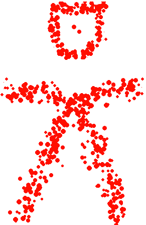

left click to place, right click to remove.
select buttons at top to select a tool
g = gravity well (attracts Novules)
d = destructo (destroys Novules)
n = nova (create new Novules)
c = cloak mode (toggles the display of the tools)
